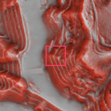
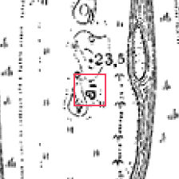
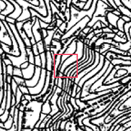
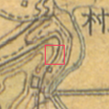
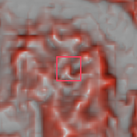
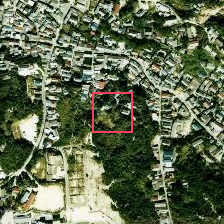

1930s
1 m LiDAR
Sasaguri, FukuokaW2-029

 1930s
1 m LiDAR
1930s
1 m LiDAR


Meiji–Taishō 1 m LiDAR

1880s 1 m LiDAR

Imperial 1 m LiDAR

Pre-War 1 m LiDAR| Model | ROC-AUC | PR-AUC | F1 |
|---|---|---|---|
| Historical map only | 0.9188 | 0.6494 | 0.7078 |
| 1 m LiDAR Red-Relief only | 0.8262 | 0.4451 | 0.4730 |
| Dual-branch neural only | 0.9531 | 0.8211 | 0.8005 |
| Modality-aware R8 (N = 921) | 0.9649 | 0.8133 | 0.8114 |
| Verified subset (N = 647) | 0.9798 | 0.8878 | 0.8806 |